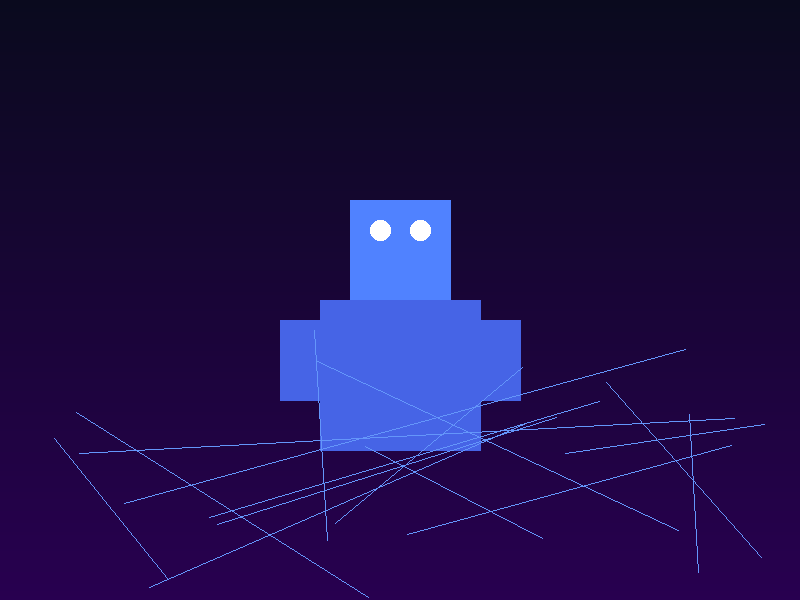

Hackissimo.tech
ChatGPT Agent: l'assistente universale
Nel luglio 2025 OpenAI ha svelato un nuovo passo nell’evoluzione dell’intelligenza artificiale conversazionale: ChatGPT Agent. Questo agente generale va oltre il semplice chatbot e si presenta come un assistente digitale capace di agire al posto nostro. Grazie all’integrazione con i servizi di calendario, email e suite da ufficio, è in grado di pianificare riunioni, inviare messaggi, creare presentazioni e persino interfacciarsi con applicazioni esterne per eseguire acquisti online o prenotazioni. La funzione "Deep Research" gli permette di consultare fonti di informazioni affidabili per rispondere a domande complesse e redigere report strutturati.
Una delle caratteristiche più interessanti di ChatGPT Agent è la possibilità di delegare compiti articolati. Ad esempio, può analizzare un documento, estrarre i punti chiave e organizzare i dati in un foglio di calcolo; oppure può confrontare prezzi su diversi siti e procedere con un acquisto seguendo il budget indicato. OpenAI ha inoltre annunciato una funzionalità chiamata "Study Together", pensata per lo studio collaborativo: l’agente può organizzare sessioni di revisione, proporre esercizi personalizzati e spiegare concetti in base al livello dell’utente. Queste capacità trasformano l’IA in un vero assistente universale, in grado di svolgere attività che richiedono oggi l’intervento di diverse applicazioni separate.
Nonostante l’entusiasmo, il lancio di ChatGPT Agent solleva interrogativi sul controllo e la responsabilità delle azioni svolte dall’IA. Affidare a un agente la gestione di calendari e pagamenti implica garantire la sicurezza dei dati e l’aderenza a normative sulla privacy. Inoltre, l’adozione di questi strumenti richiede un cambio culturale: molti dovranno imparare a delegare attività che finora svolgevano manualmente e a verificare i risultati prodotti dal sistema. OpenAI ha dichiarato di voler procedere con un rollout graduale, ascoltando il feedback degli utenti e lavorando con partner di fiducia per integrare l’agente in diversi settori. Se adottato con consapevolezza, ChatGPT Agent potrebbe diventare un compagno di lavoro e studio indispensabile, semplificando la vita quotidiana e liberando tempo per attività ad alto valore umano.
← Torna alla home